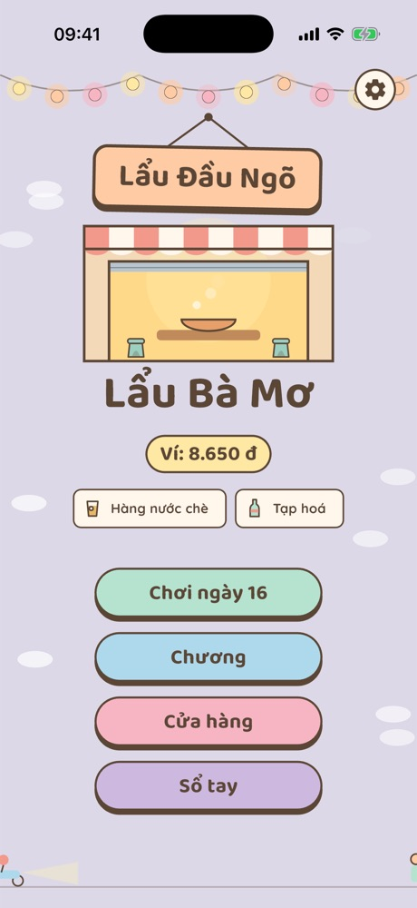
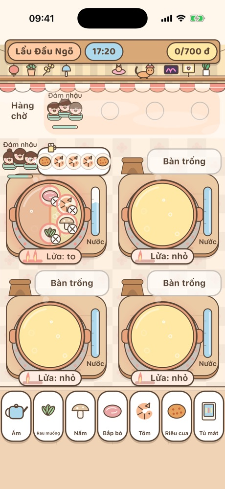
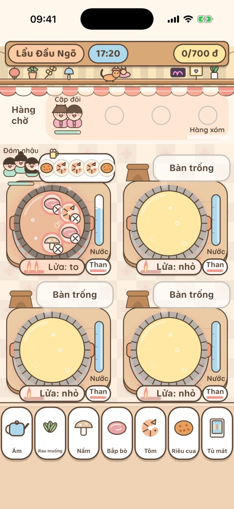
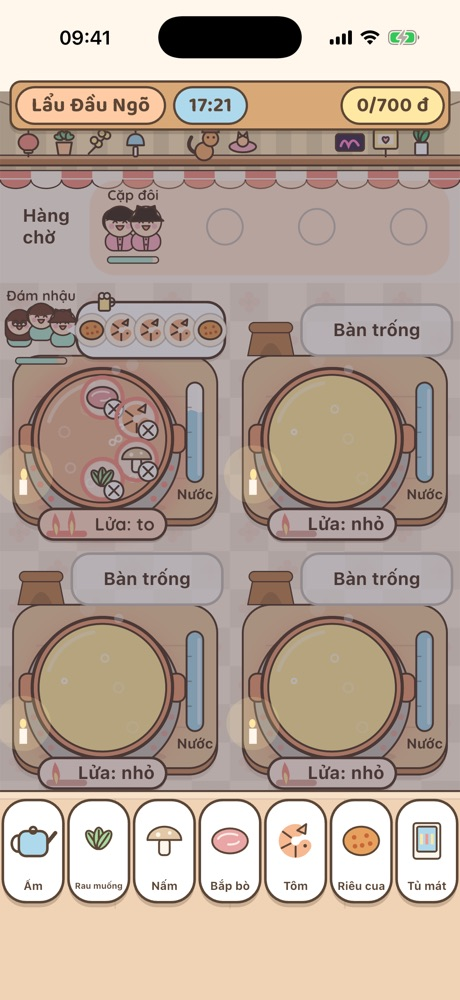
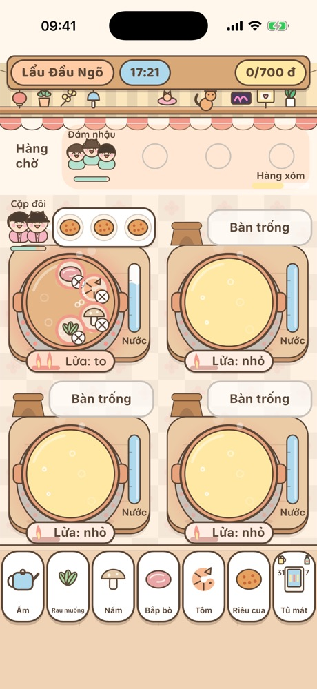
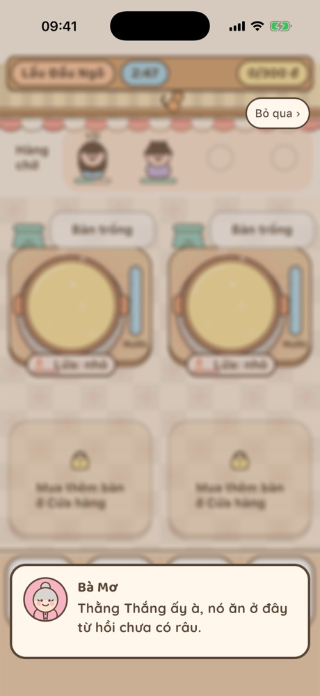
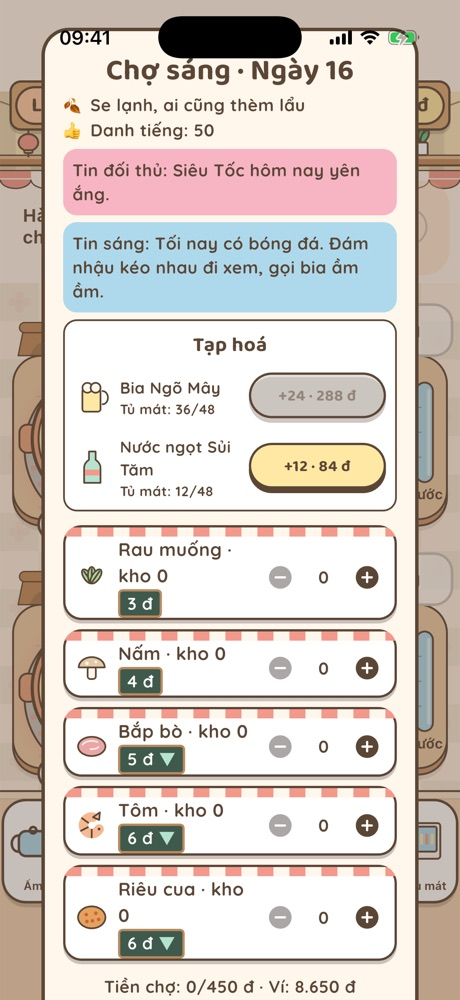
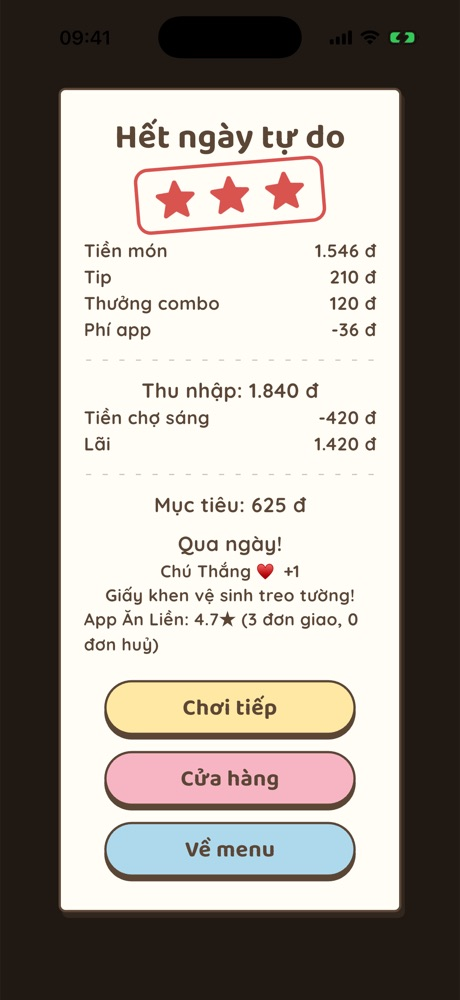
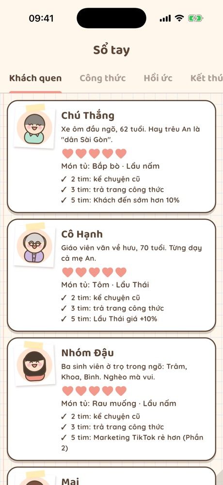
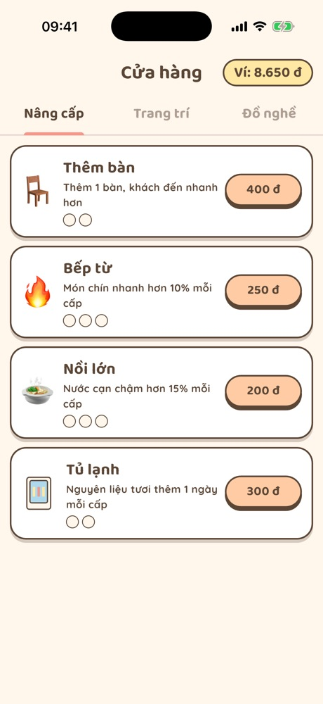

Nhúng lẩu, nướngDip and grill
Kéo món vào nồi, canh lửa, vớt đúng lúc chín tới. Để lâu là nhừ, khách chê.Drag food into the pot, mind the heat, scoop it right on time. Too long and it goes mushy.
Bà Mơ có một quán lẩu nhỏ đầu ngõ. Nồi nước dùng còn sôi, khách đã xếp hàng. Bạn giúp bà từ chiếc nồi đầu tiên đến cả một chuỗi quán trên bản đồ Hà Nội. Grandma Mơ runs a tiny hotpot shop at the mouth of a Hanoi alley. The broth is still bubbling and guests are already lining up. Help her grow from one pot to a chain of shops across Hanoi.
Mỗi ngày một nhịp: đi chợ, mở cửa, cuống tay giờ cao điểm, rồi ngồi đếm hoá đơn.Every day has its rhythm: market run, opening up, the dinner rush, then counting the bills.
Kéo món vào nồi, canh lửa, vớt đúng lúc chín tới. Để lâu là nhừ, khách chê.Drag food into the pot, mind the heat, scoop it right on time. Too long and it goes mushy.
Chọn rau, thịt, bia, nước ngọt. Giá lên xuống theo mùa, sau bão rau đắt, trước Tết thịt tăng.Pick greens, meat, beer and soda. Prices move with the seasons: storms, Tết, summer.
Mở 17:00, đóng 22:00. Dọn bàn, khách gọi thêm, mang bia từ tủ mát, đơn giao qua app.Open at 5 pm, close at 10. Clear tables, take extra orders, fetch drinks, cook delivery orders.
Mất điện thắp nến, đêm bóng đá, ngập ngõ, đoàn kiểm tra vệ sinh, hàng xóm kêu ồn.Blackouts by candlelight, football nights, flooded alleys, health inspectors, grumpy neighbours.
Nâng cấp bếp, thuê người, chạy quảng cáo, mở chi nhánh, giành khách với quán đối diện.Upgrade the kitchen, hire staff, run campaigns, open branches and win guests from rivals.
Mỗi khách một khẩu vị, một câu chuyện. Nhiều nhánh truyện, nhiều kết thúc tuỳ cách bạn làm ăn.Every regular has a taste and a story. Many branches and endings depending on how you run the shop.
Khu tập thể sắp sửa lại, cả ngõ dọn ra vỉa hè nấu lẩu, rồi cùng nhau về nhà mới.The old housing block is being rebuilt. The alley cooks on the sidewalk, then moves into a new home together.
6 chương mới, mỗi chương một luật: bàn gấp vỉa hè, mưa đọng trên bạt, hàng xóm mang món tới nhờ nấu, đếm ngược giao thừa, rồi cả ngõ về nhà mới.6 new chapters, each with a new rule: sidewalk folding tables, rain pooling on the tarps, neighbours bringing food to cook, a New Year countdown, then the whole alley moves house.
"Cô Hạnh, 1995": nồi lẩu Thái đầu tiên của ngõ. "Ông Khải, 1990": cậu bé đánh giày Bờ Hồ và khung cửa sổ sơn xanh."Ms. Hạnh, 1995": the alley's first Thai hotpot. "Mr. Khải, 1990": a shoeshine boy by the lake and a green window frame.
Ghé 9 nhà hàng xóm, mỗi ngày một câu chuyện. Sau khi xem kết, mỗi tháng một lá thư kể ngõ Mây đổi thay.Drop by 9 neighbours' homes, a new story every day. After the ending, a monthly letter about how the alley is changing.
3 thành phố mới, mỗi nơi một nồi riêng: lẩu cá tầm, lẩu bò Huế với bắp chuối, lẩu cá linh bông súng.3 new cities, each with its own pot: sturgeon hotpot, Huế beef with banana blossom, linh fish with water lily.
Chơi tự do: vớt vừa chín để lên tay nghề, sát nhừ được gấp đôi. Món càng thạo càng giữ ngon lâu.Free play: scoop at the right moment to level up, cutting it close earns double. A practised dish stays perfect longer.
Sáng ra chợ tính xem ninh mấy nồi nước cốt. Thiếu thì phải nấu nước lã, khách trả ít hơn.Decide at the morning market how many pots of stock to simmer. Run short and it's plain water, for less pay.










Đọc tin sáng, xem thời tiết, mua vừa đủ hàng.Read the morning news, check the weather, buy just enough.
Đầu ca thong thả: xếp khách, đặt nồi, nhóm lửa.A slow start: seat guests, set pots, light the fire.
Bàn kín, khách gọi thêm, đám nhậu đòi bia.Full tables, extra orders, a loud group wants beer.
Tiền món, tip, combo. Đủ mục tiêu là có sao.Food, tips, combos. Hit the goal, earn stars.
“Nồi lẩu cũng như người ấy. Lửa to quá thì cạn, nhỏ quá thì nguội.”“A hotpot is like a person. Too hot and it dries up, too low and it goes cold.”
“Mình mở lại quán năm ngày thôi. Đủ tiền là con về Sài Gòn nha bà.”“Let's reopen for five days. Once we have the money, I go back to Saigon, okay?”
“Dân Sài Gòn ra đây ăn lẩu thì ngồi ghế nhựa nhé, không có sofa đâu.”“Saigon folks eat hotpot on plastic stools here. No sofas.”
Game miễn phí trọn vẹn. Gói chỉ đổi hình hoặc thêm chuyện, không bán lợi thế điểm số. Trong game: Cửa hàng › tab Ủng hộ.The whole game is free. Packs only change the look or add stories, never a score advantage. In the game: Shop › Support tab.
Đổi tên quán bao nhiêu lần cũng được.Rename your shop as often as you like.
25.000 ₫Bộ bàn ghế gỗ cho quán + 2.000 đ vào ví.Wooden tables for the shop + 2,000 ₫ in your wallet.
25.000 ₫Nhận thưởng không cần xem quảng cáo, Mèo Mỡ đội mũ len.Get ad rewards without watching ads, plus a wool hat for Mỡ the cat.
49.000 ₫Mái hiên đỏ treo đèn lồng, hoa mai bay trong quán, biển Tết, áo dài đỏ cho Mèo Mỡ, khăn bàn thêu, ghế sơn mài.Red awning with lanterns, apricot blossoms drifting through the shop, a Tết sign, a red ao dai for Mỡ, embroidered tablecloths, lacquer stools.
49.000 ₫Biển neon nhấp nháy, biển gỗ khắc, mái hiên xanh phố cổ, mái tre đan, thêm 5 câu mời trà. Bạn bè ghé quán đều thấy.Flickering neon sign, carved wood sign, Old Quarter green awning, woven bamboo awning, 5 more tea notes. Friends see it when they visit.
25.000 ₫Năm ngày Hà Nội ngập lịch sử: bà Mơ nấu cho cả ngõ. Tặng kèm áo mưa vàng cho Mèo Mỡ.Five days of Hanoi's worst flood: Grandma Mơ cooks for the whole alley. Comes with a yellow raincoat for Mỡ.
49.000 ₫Lưu 10 thực đơn Quán tự nấu, luyện lại thử thách 7 ngày qua, tạp dề cho Mèo Mỡ.Save 10 own menus, replay the last 7 daily challenges, an apron for Mỡ.
25.000 ₫6 khung cho Thiệp quán: Tết, Noel, mưa phố, phố đêm, hoa sữa, Mèo Mỡ.6 frames for your shop postcard: Tết, Christmas, rainy street, night street, milkwood blossom, Mỡ the cat.
25.000 ₫4 bé mèo phố cổ ghé quán, sổ mèo thành 16. Kèm giỏ mây và cây cào móng.4 Old Quarter cats visit your shop, the cat book grows to 16. Comes with a rattan basket and a scratching post.
25.000 ₫Giàn hoa giấy trên sân thượng, mái hiên hoa giấy cho quán.A bougainvillea trellis on the rooftop and a bougainvillea awning for the shop.
25.000 ₫Giá tại Việt Nam. iPhone mua qua App Store (nước khác theo giá App Store); Android chuyển khoản ngân hàng, xem trang Android. Đổi máy: bấm Khôi phục giao dịch.Prices in Vietnam. On iPhone, packs are bought through the App Store (local App Store prices elsewhere); on Android by bank transfer, see the Android page. New phone: tap Restore purchases.
Có trên iPhone và Android. Tải về là chơi, tài khoản tuỳ chọn.On iPhone and Android. Download and play, account optional.